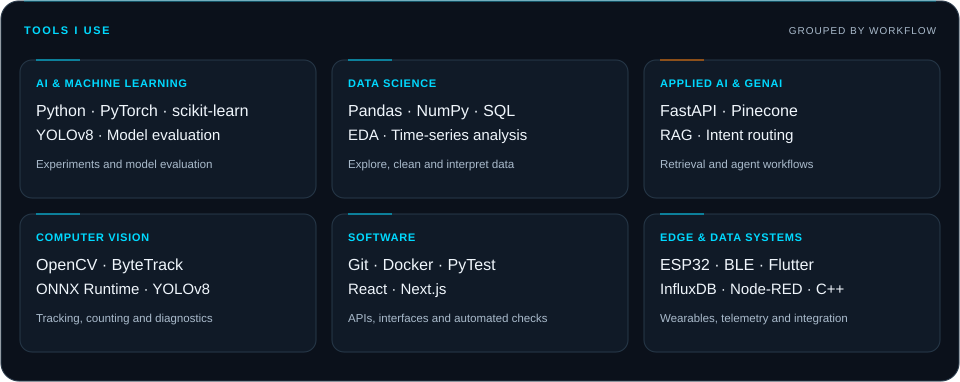
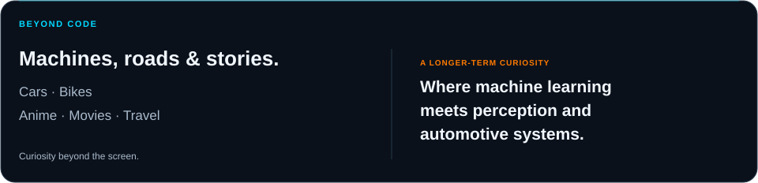

01 / About
I'm an AI Engineer at Goose Industrial Solutions Pvt. Ltd., with a B.Tech in Artificial Intelligence & Data Science. I'm interested in turning visual, sensor and tabular data into useful models and applications.
My current work involves industrial data integration and energy monitoring. Alongside that, my portfolio explores computer vision, retrieval-based AI and time-series analytics—with attention to data quality, evaluation and how a system behaves outside a demo.

02 / Selected projects
01 — Industrial Conveyor Vision Analytics
Computer vision · Tracking & counting · Evaluation
An extension of a baseline bottle detector into a tracking, counting and analytics workflow.
- System extension: persistent ByteTrack IDs, directional line counting, event logging and a dashboard for reviewing results.
- Reliability work: failure-mode analysis, dataset diagnostics, ONNX export checks and automated tests.
Built with: Python, YOLOv8, OpenCV, ByteTrack, ONNX and PyTest.
The baseline detector and original model training were a colleague's work. My contribution focuses on the downstream system, diagnostics and evaluation.
02 — Multi-Agent Industrial Troubleshooting AI
Applied AI · RAG · Intent routing
A prototype for finding relevant technical information and organising troubleshooting responses from documents.
- Request routing: rule-based checks and intent classification direct questions to the relevant specialist workflow.
- Retrieval: a FastAPI backend connects document search and Pinecone retrieval with the response workflow.
Built with: Python, FastAPI, Pinecone, Next.js and TypeScript.
Prototype work exploring retrieval and agent coordination.
03 — IIoT Dairy Monitoring Dashboard
Data science · Time series · Sensor telemetry
A dashboard project for exploring industrial sensor data, historical trends and monitoring interfaces.
- Data workflow: time-series storage, historical queries and visualisation of equipment readings.
- Analytics: trend views and a forecasting demonstration for exploring how readings may approach thresholds.
Built with: FastAPI, InfluxDB, React and Docker.
Developed collaboratively, with forecasting explored as a demonstration.
04 — Smart Glasses — Real-Time Transcribing HUD
Edge & embedded · Wearables · BLE
A wearable speech-to-text project connecting a Flutter application to an ESP32 display.
- Mobile-to-device flow: transcribed speech is sent over BLE from the phone to the wearable.
- Hardware integration: an ESP32 and OLED display present scrolling captions in a compact HUD.
Built with: Flutter, Dart, ESP32, BLE, C++ and an SSD1306 OLED.
Earlier / academic work
- JIVA — Job Seeking Mobile Application — a Flutter and Firebase project for job discovery and application tracking.
03 / Tools I use

04 / Experience
AI Engineer · Goose Industrial Solutions Pvt. Ltd.
January 2026 – present
My work spans applied-AI prototypes, industrial data integration and monitoring software.
- Applied-AI R&D: contributed to the internal Goose Sense / industrial-assistant prototype, exploring Next.js interfaces, FastAPI coordination, document retrieval and request routing.
- Industrial data & monitoring: collaborated on SCADA–SIMATIC Energy Manager PRO integration over OPC UA, meter mapping and 10 section dashboards using a client-approved template and available energy data. Supported dashboard validation and technical documentation.
- Monitoring software & deployment: contributed to a client monitoring dashboard using Python, Node-RED, InfluxDB and Docker, including deployment on Radxa hardware and on-site installation.
QEA Intern · Cognizant Technology Solutions
2025
Completed internship training in Java, Selenium and software testing as part of Quality Engineering & Assurance (QEA).
05 / Beyond code

06 / Currently exploring
- Reliable ML systems: dataset quality, failure analysis and model evaluation.
- Retrieval-based AI: document search, intent routing and useful troubleshooting workflows.
- Time-series analytics: turning sensor data into clearer monitoring and decision support.
07 / Get in touch
Interested in AI Engineer, ML Engineer and Data Scientist opportunities. Resume available on request.